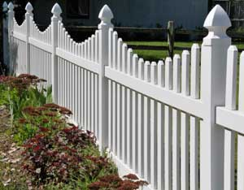

Do you have a simple recipe for whitewash? I want to paint my fence.
CARL
Sparwood, British Columbia
If you crush and superheat any calcium-rich mineral such as limestone, grind it fine and mix it with water, it will heat up into a caustic alkaline soup that will stick to practically anything and quickly firm up in any shape. As it cools, it loses its chemical burning characteristic and cures into a hard, dense material. Mixed with whiting (while clay, corn starch or wheat flour) and/or sand, gravel or rocks, this is the basis of plaster of Paris, stucco, concrete and long-lasting, exterior-grade whitewash.
Lime is sold as mason's lime, quicklime or just plain lime in waterproof sacks that hold up to 60 pounds. This lime is bone-dry and bright white - not like the gray and somewhat oily lime used by gardeners to counteract the acidity of soil. Lime can be mixed with water and used right out of the sack, but you're better off using slaked lime.
Here's how you make it:
1. Fill a stout wooden or galvanized steel bucket half-way with water.
2. Pour in lime, stirring with a wooden rod or paint stirrer, until the water level is within two or three inches of the top. Leave the stirrer resting at the bottom to help break the material out and let it set overnight (but no longer).
3. The next day, pour out the water leaving just enough to cover, and stir up the settled lime
4. Mix up a saline solution - a cup or two of salt per gallon of water - and add this to the lime until it reaches a pancake batter-like consistency. Mix only enough to use in one session. To keep the lime from resettling in the bottom of the bucket and to act as a binder, we like to add in powdered milk or paperhanger’s wheat paste. Mix them to a thin paste in water before adding.
Apply this solution to your fence with a broad, disposable whitewash brush (which you can find at an old-time country paint or hard goods store). To keep the wash from dabbling on your fence-line petunias, slosh the brush in, pull it up, shake straight down twice and flip the tip up quickly to the work.
|
 PHOTO: RIVERNORTH PHOTOGRAPHY A whitewash made with slaked lime adds a durable, long-lasting color. |
|
|